Candidate List 20260806Last night — ZTF: 2,421 passed basic cuts (126 young) · LSST: 0 passed basic cuts (0 young)Previous Day Next Day
Section 1: New Sources (age<1d) Section 2: Old (1-5d) sources observed last nightplaceholder
Section 1: New Afterglow/FBOT Cands Last Night (1)
1. [ZTF] ZTF26abmfjqm (Afterglow?) [Back to Top] [Share] [Trigger Swift] [Fritz Alert] [Fritz Source] [Lasair]RA, Dec: 290.58219, 39.28122 19h22m19.73s, 39d16m52.38sGalactic (l, b): 71.46778, 11.31033 ext(g-r) = 0.151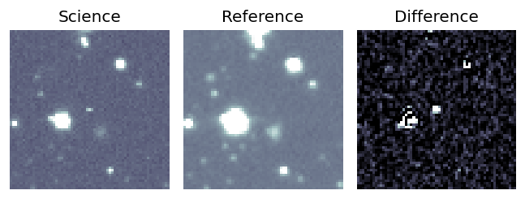
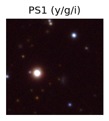

TESS: Sectors [ 14 40 41 54 55 75 119 120]
PS1: 0 sources in 3 arcsec
LegacySurvey: 0 sources in 3 arcsec
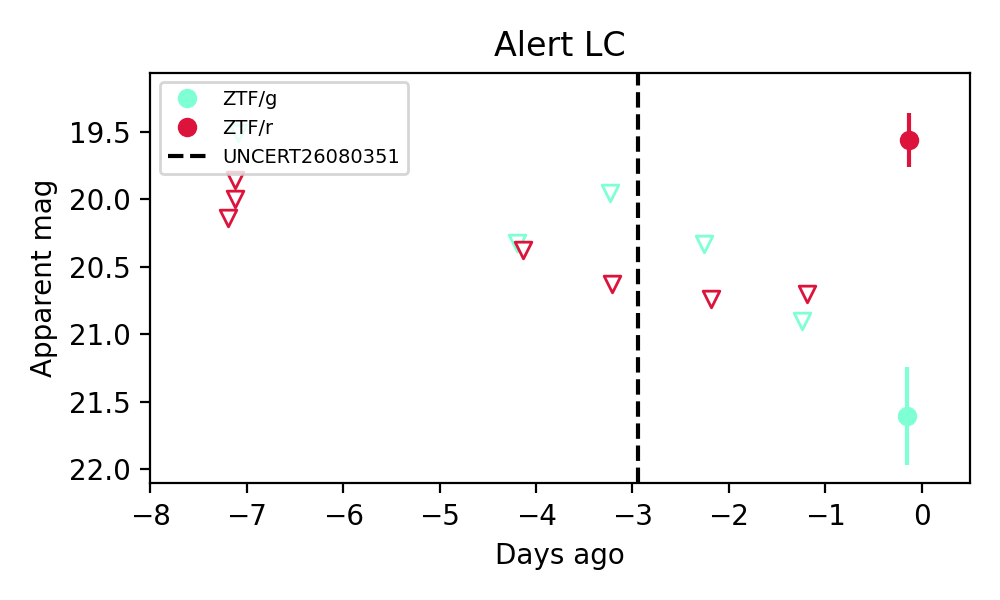
Extinction-corrected gr color:
From alerts: 1.89 +/- 0.41 mag
Consistent with synchrotron, g-r>0!
Rise Rate:
r: 1.08 mag/day
Fade Rate:
Section 2: Older Sources Observed Last Night (8)
0. [ZTF] ZTF26ablengy (Afterglow?) [Back to Top] [Share] [Trigger Swift] [Fritz Alert] [Fritz Source] [Lasair]RA, Dec: 274.88566, 1.82835 18h19m32.56s, 1d49m42.05sGalactic (l, b): 30.91682, 7.92895 ext(g-r) = 0.906


TESS: Sectors [ 80 118]
PS1: 0 sources in 3 arcsec
LegacySurvey: 0 sources in 3 arcsec

Extinction-corrected gr color:
From alerts: -0.19 +/- 0.27 mag
Extinction-corrected gi color:
From alerts: -0.31 +/- 0.35 mag
Extinction-corrected ri color:
From alerts: -0.3 +/- 0.27 mag
Consistent with synchrotron, g-r>0!
Rise Rate:
g: 0.06 mag/day
r: 0.17 mag/day
i: 0.17 mag/day
Fade Rate:
g: 0.23 mag/day
r: 0.17 mag/day
i: 0.22 mag/day
1. [ZTF] ZTF26ablevah (Afterglow?) [Back to Top] [Share] [Trigger Swift] [Fritz Alert] [Fritz Source] [Lasair]RA, Dec: 292.72675, -4.23224 19h30m54.42s, -4d-13m-56.07sGalactic (l, b): 33.64605, -10.70483 ext(g-r) = 0.606


TESS: Sectors [54 81]
PS1: 0 sources in 3 arcsec
LegacySurvey: 0 sources in 3 arcsec

Extinction-corrected gr color:
From alerts: -0.31 +/- 0.12 mag
Extinction-corrected gi color:
From alerts: -0.6 +/- 0.13 mag
Extinction-corrected ri color:
From alerts: -0.29 +/- 0.11 mag
Rise Rate:
g: 0.27 mag/day
r: 0.67 mag/day
i: 0.37 mag/day
Fade Rate:
g: 0.14 mag/day
r: 0.24 mag/day
i: 0.13 mag/day
2. [ZTF] ZTF26abljqps (Afterglow?) [Back to Top] [Share] [Trigger Swift] [Fritz Alert] [Fritz Source] [Lasair]RA, Dec: 282.6902, -10.97754 18h50m45.65s, -10d-58m-39.16sGalactic (l, b): 23.06228, -4.83285 ext(g-r) = 0.479


TESS: Sectors [80 92]
PS1: 0 sources in 3 arcsec
LegacySurvey: 0 sources in 3 arcsec

Extinction-corrected gr color:
From alerts: -0.39 +/- 0.09 mag
Extinction-corrected gi color:
From alerts: -0.7 +/- 0.13 mag
Rise Rate:
g: 2.27 mag/day
r: 2.09 mag/day
i: 0.1 mag/day
Fade Rate:
g: 0.25 mag/day
3. [ZTF] ZTF26ablkwfo (Afterglow?) [Back to Top] [Share] [Trigger Swift] [Fritz Alert] [Fritz Source] [Lasair]RA, Dec: 269.78882, -8.71753 17h59m9.32s, -8d-43m-3.10sGalactic (l, b): 19.11374, 7.4602 ext(g-r) = 1.252


TESS: Sectors [ 80 118]
PS1: 0 sources in 3 arcsec
LegacySurvey: 0 sources in 3 arcsec

Extinction-corrected gr color:
From alerts: -0.53 +/- 0.12 mag
Extinction-corrected gi color:
From alerts: -0.66 +/- 0.12 mag
Extinction-corrected ri color:
From alerts: -0.18 +/- 0.11 mag
Rise Rate:
g: 0.33 mag/day
r: 1.53 mag/day
i: 0.68 mag/day
Fade Rate:
g: 0.3 mag/day
r: 0.32 mag/day
i: 0.3 mag/day
4. [ZTF] ZTF26ablpqzw (FBOT?) [Back to Top] [Share] [Trigger Swift] [Fritz Alert] [Fritz Source] [Lasair]RA, Dec: 227.72978, 13.34022 15h10m55.15s, 13d20m24.79sGalactic (l, b): 17.01262, 54.65635 ext(g-r) = 0.04


TESS: Sectors 51
PS1: 0 sources in 3 arcsec
LegacySurvey: 1 sources in 3 arcsec Closest: d = 0.27 arcsec, 228.1 deg (east of north) photoz=0.15 (68% bounds 0.13, 0.17), type=SER peak abs mag = -19.8 (68% bounds -19.46, -20.08)

Extinction-corrected gr color:
From alerts: 0.26 +/- 0.27 mag
Extinction-corrected gi color:
From alerts: 0.04 +/- 0.31 mag
Extinction-corrected ri color:
From alerts: -0.24 +/- 0.3 mag
Consistent with synchrotron, g-r>0!
Rise Rate:
g: 0.02 mag/day
r: 0.21 mag/day
i: 0.22 mag/day
Fade Rate:
5. [ZTF] ZTF26abmabrc (FBOT?) [Back to Top] [Share] [Trigger Swift] [Fritz Alert] [Fritz Source] [Lasair]RA, Dec: 25.64318, -2.82362 1h42m34.36s, -2d-49m-25.04sGalactic (l, b): 151.83473, -62.78994 ext(g-r) = 0.024


TESS: Sectors [ 3 30 70 97 108]
PS1: 0 sources in 3 arcsec
LegacySurvey: 1 sources in 3 arcsec Closest: d = 0.27 arcsec, 165.3 deg (east of north) photoz=0.39 (68% bounds 0.15, 0.94), type=EXP peak abs mag = -23.14 (68% bounds -20.87, -25.47)

Extinction-corrected gr color:
From alerts: -0.18 +/- 0.12 mag
Extinction-corrected gi color:
From alerts: -0.6 +/- 0.21 mag
Extinction-corrected ri color:
From alerts: -0.42 +/- 0.2 mag
Rise Rate:
g: 0.29 mag/day
r: 0.29 mag/day
i: 0.08 mag/day
Fade Rate:
6. [ZTF] ZTF26abmbhrv (Afterglow?) [Back to Top] [Share] [Trigger Swift] [Fritz Alert] [Fritz Source] [Lasair]RA, Dec: 8.96625, 17.26666 0h35m51.90s, 17d15m59.97sGalactic (l, b): 117.62942, -45.4447 ext(g-r) = 0.039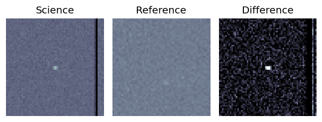
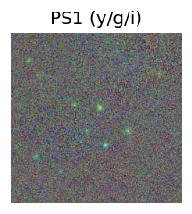
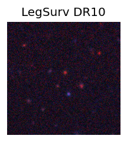
TESS: Sectors [17 42 43 57 84]
SDSS (<15 kpc):Found SDSS phot-z: z=0.66; peak abs mag = -24.47
PS1: 0 sources in 3 arcsec
LegacySurvey: 1 sources in 3 arcsec Closest: d = 3.51 arcsec, 345.0 deg (east of north) photoz=0.66 (68% bounds 0.63, 0.7), type=DEV peak abs mag = -24.41 (68% bounds -24.26, -24.57)
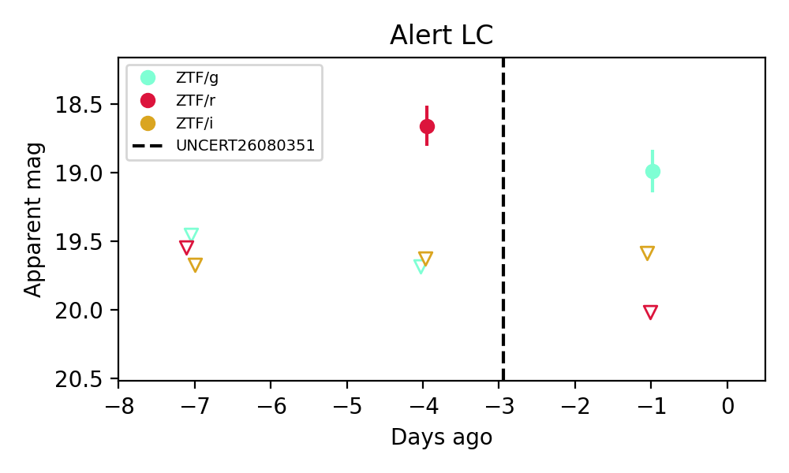
Extinction-corrected gr color:
From alerts: -1.07 +/- 99 mag
Extinction-corrected gi color:
From alerts: -0.66 +/- 99 mag
Extinction-corrected ri color:
From alerts: -0.99 +/- 99 mag
Rise Rate:
g: 0.23 mag/day
r: 0.28 mag/day
Fade Rate:
r: 0.46 mag/day
7. [ZTF] ZTF26abmfqnv (FBOT?) [Back to Top] [Share] [Trigger Swift] [Fritz Alert] [Fritz Source] [Lasair]RA, Dec: 313.27864, 11.24045 20h53m6.87s, 11d14m25.64sGalactic (l, b): 58.23855, -20.67663 ext(g-r) = 0.108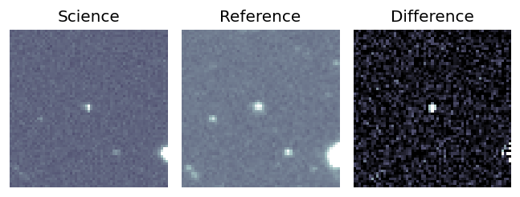
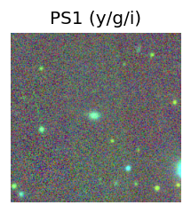
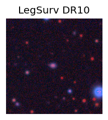
TESS: Sectors [55 82]
PS1: 0 sources in 3 arcsec
LegacySurvey: 1 sources in 3 arcsec Closest: d = 0.98 arcsec, 69.3 deg (east of north) photoz=0.26 (68% bounds 0.23, 0.28), type=SER peak abs mag = -21.15 (68% bounds -20.88, -21.37)
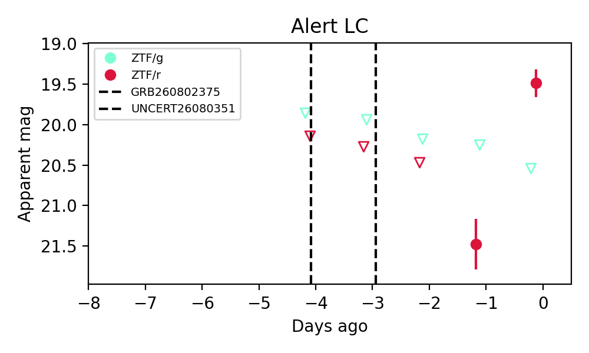
Extinction-corrected gr color:
From alerts: 0.94 +/- 99 mag
Rise Rate:
r: 1.89 mag/day
Fade Rate: